Chapter 28 Controlled Direct Effect
The formulation of mediation analysis in Chapter 27 relies on the nested potential outcomes, and fundamentally, some nested potential outcomes are not observable in any physical experiments. If we stick to the Popperian philosophy of science reviewed in Chapter 140.2, we should only define causal parameters in terms of quantities that are observable under some experiments. This chapter discusses an alternative view of causal inference with an intermediate variable. In this view, we only define the direct effect but can not define the indirect effect.
145 Definition of the controlled direct effect
We view  and
and  as two treatment factors that can be manipulated, and define potential outcomes
as two treatment factors that can be manipulated, and define potential outcomes  for
for
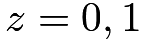
and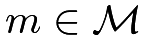
. Based on these potential outcomes, we can define the controlled direct effect (CDE) below.Definition 28.1 (CDE)
Define
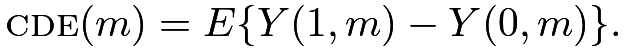 |
By definition,
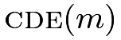
is the average causal effect of the treatment if the intermediate variable is fixed at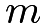
. The parameter can capture the direct effect of the treatment holding the mediator at . However, this formulation cannot capture the indirect effect. In particular, the parameter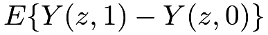
only measures the effect of the mediator on the outcome holding the treatment at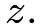
This is not a meaningful definition of the indirect effect.146 Identification and estimation of the controlled direct effect
To identify , we need the following assumption, which requires that and are jointly randomized given  .
.
Assumption 28.1
I will focus on the case with a binary and .
Mathematically, we can just view this problem as an observational study with four treatment levels
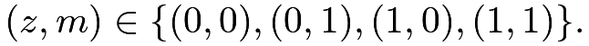 |
The following theorem extends the results for observational studies with a binary treatment, identifying
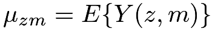 |
based on outcome regression, IPW, and doubly robust estimation.
Define
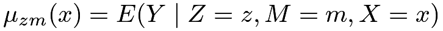 |
as the outcome mean conditional on the treatment, mediator, and covariates. Define
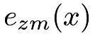 |
 |
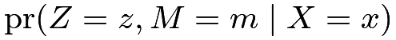 |
||
|
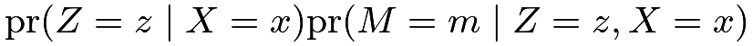 |
as the probability of the joint value of and conditional on the covariates.
Theorem 28.1
Under Assumption 28.1, we have
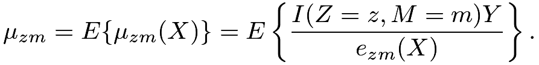 |
Moreover, based on the working models 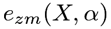 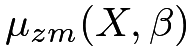 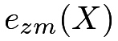 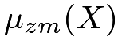
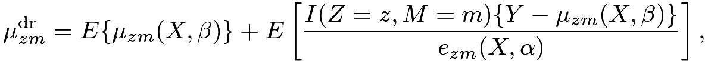 |
which equals 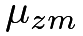 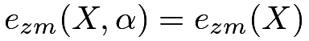 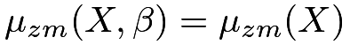
The proof of Theorem 28.1 is similar to those for the standard unconfounded observational studies. Problem 28.2 gives a general result. Based on the outcome mean model, we can obtain
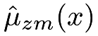
for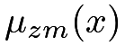
. Based on the treatment model, we can obtain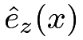
for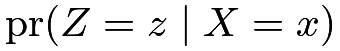
; based on the intermediate variable model, we can obtain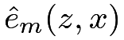
for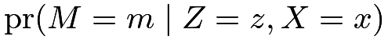
. We can then estimate by outcome regression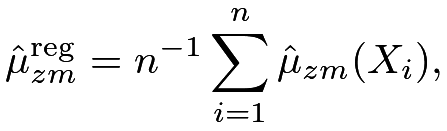 |
by IPW
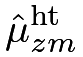 |
|
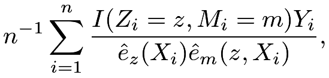 |
||
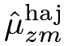 |
|
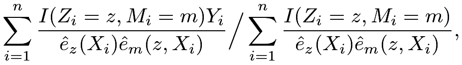 |
or by augmented IPW
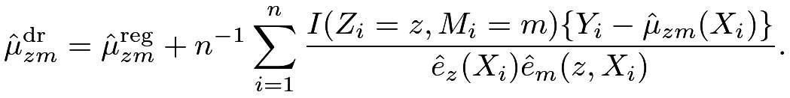 |
We can then estimate by
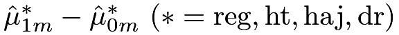
and use the bootstrap to approximate the standard error.If we are willing to assume a linear outcome model, the controlled direct effect simplifies to the coefficient of the treatment. Example 28.1 below gives the details.
147 Discussion
The formulation of the controlled direct effect does not involve nested or a priori counterfactual potential outcomes, and its identification does not require the cross-world counterfactual independence assumption. The parameter can capture the direct effect of the treatment holding the mediator at . However, this formulation cannot capture the indirect effect. I summarize the causal frameworks for intermediate variables in Table 12.
The mediation analysis framework can decompose the total effect into natural direct and indirect effects, but it requires nested potential outcomes and cross-world independence.
The principal stratification and controlled direct effect frameworks cannot define indirect effects but they do not involve nested potential outcomes and cross-world independence.
Moreover, the principal stratification framework does not necessarily require that lies on the causal pathway from the treatment to the outcome. However, its identification and estimation involves disentangling mixture distributions, which is a nontrivial task in statistics.
148 Homework problems
28.1 cde and nde
Show that under cross-world independence
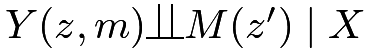
for all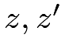
and , the conditional controlled direct effect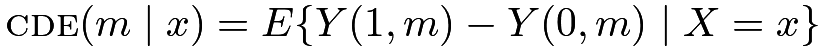
and the conditional natural direct effect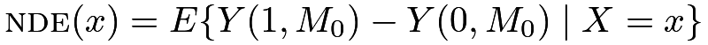
have the following relationship: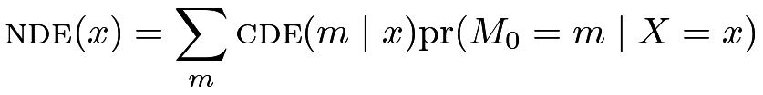 |
for a discrete . Without the cross-world independence, does this relationship still hold in general?
28.2 Observational studies with a multi-valued treatment
Theorem 28.1 is a special case of the following theorem for unconfounded observational studies with multiple treatment levels (Imai and Van Dyk,, 2004; Cattaneo,, 2010). Below, I state the general problem and theorem.
Consider an observational study with a multi-valued treatment
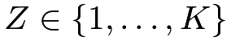
, covariates, and outcome  . Unit
. Unit  has
has 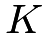
potential outcomes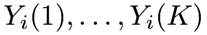
corresponding to the treatment levels. In general, we can define causal effect in terms of contrasts of the potential outcomes: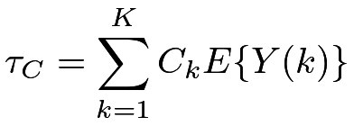 |
where
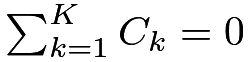
. The canonical choice of the pairwise comparisonTherefore, the key is to identify and estimate the means of the potential outcomes under the ignorability and overlap assumptions below based on IID data of  .
.
Assumption 28.2
and for
Define the generalized propensity score as
and define the conditional outcome mean as
for We have the following theorem.
Theorem 28.2
Under Assumption 28.2, we have
Moreover, based on the working models and for and , respectively, we have the doubly robust formula
which equals if either or .
Prove Theorem 28.2.
28.3 cde in the linear outcome model
28.4 cde in the logistic outcome model
28.5 Recommended reading
Nguyen et al., (2021) provided a friendly review of of the topics in Chapters 27 and 28.